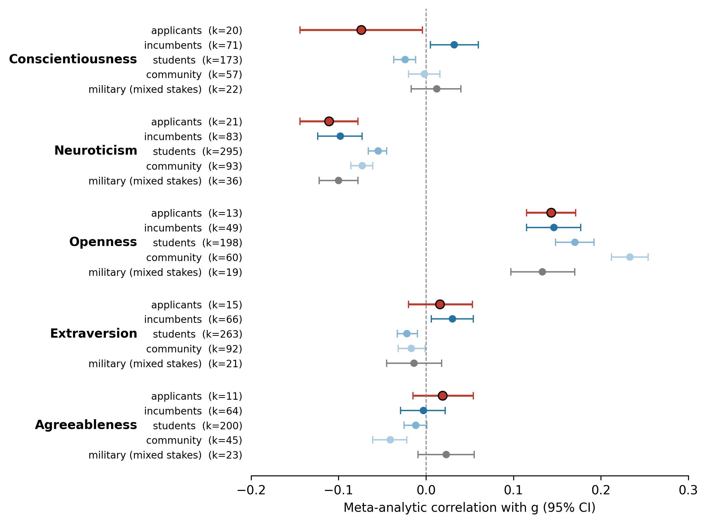
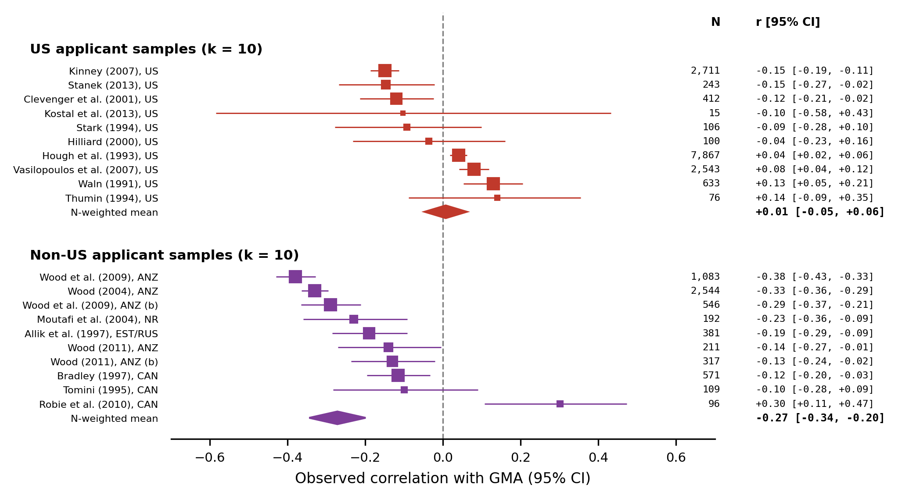
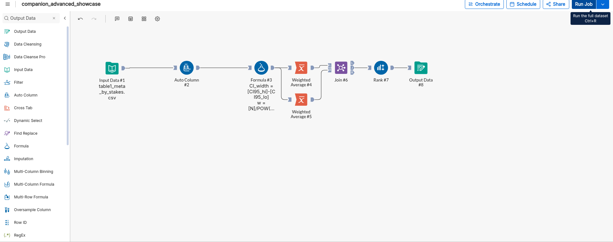

Personnel selection · Research companion
The evidence
The figures from the manuscript, with plain-language reading guides. Study 1 is a stakes-moderated meta-analysis built on the public Stanek & Ones (2023) database; Study 2 is the simulation behind the calculator.
1 · Only the faked trait moves

2 · The same contrast, study by study

3 · The mechanism, end to end

4 · Cross-trait stakes ranking (descriptive aggregation)
The paper’s primary meta-analytic estimates are per trait (Table 1 and Supplemental Table S2): each Big Five factor keeps its own sample-size-weighted mean correlation with GMA. The aggregation below is an additional descriptive view — it pools the five trait-level estimates within each stakes group with inverse-variance weights w = N / (1 − r²)² and ranks the groups. Each row aggregates k = 5 trait-level estimates. It does not replace the trait-specific estimates used in the simulations and calculator.
Table columns are sortable (click or press Enter on a header). Forest stays in manuscript rank order (rank 1 at top); highlighting stays synced by group.
| Rank | Stakes group | k | Weighted mean r | Weighted mean ρ | 95% CI (r) |
|---|---|---|---|---|---|
| 1 | Low stakes (community) | 5 | +0.015 | +0.019 | [+0.012, +0.019] |
| 2 | Low stakes (all) | 5 | +0.012 | +0.015 | [+0.010, +0.014] |
| 3 | Low stakes (students) | 5 | +0.011 | +0.013 | [+0.008, +0.014] |
| 4 | Low stakes (incumbents) | 5 | +0.007 | +0.008 | [+0.000, +0.014] |
| 5 | Military (mixed stakes) | 5 | −0.013 | −0.016 | [−0.020, −0.007] |
| 6 | High stakes (applicants) | 5 | −0.017 | −0.020 | [−0.023, −0.010] |
Download: data (CSV) · forest (PNG) · forest (SVG)


Descriptive inverse-variance aggregation of the five trait-level estimates in table1_meta_by_stakes.csv; plotted values in python_verified_with_ci.csv.
5 · Alteryx Designer Cloud cross-check
The weighted aggregation above was cross-checked in Designer Cloud (workflow companion_advanced_showcase, job 4995193). The output CSV matches the independent Python recompute of w = N / (1 − r²)² on the posted trait-level estimates.

| Rank | Stakes group | Alteryx wmean r | Python wmean r | Alteryx wmean ρ | Python wmean ρ | Match |
|---|---|---|---|---|---|---|
| 1 | Low stakes (community) | +0.015449 | +0.015449 | +0.018523 | +0.018523 | Exact |
| 2 | Low stakes (all) | +0.011991 | +0.011991 | +0.014542 | +0.014542 | Exact |
| 3 | Low stakes (students) | +0.010971 | +0.010971 | +0.013154 | +0.013154 | Exact |
| 4 | Low stakes (incumbents) | +0.007078 | +0.007078 | +0.008430 | +0.008430 | Exact |
| 5 | Military (mixed stakes) | −0.013355 | −0.013355 | −0.016295 | −0.016295 | Exact |
| 6 | High stakes (applicants) | −0.016826 | −0.016826 | −0.020346 | −0.020346 | Exact |
Download: Alteryx output (CSV) · Python recompute (CSV) · input Table S2 (CSV)
Note. Weighted aggregation cross-checked in Designer Cloud; output CSV matches the Python recompute in python_verified_with_ci.csv from input table1_meta_by_stakes.csv. wmean = inverse-variance-weighted mean; r = observed correlation; ρ = reliability-corrected correlation.